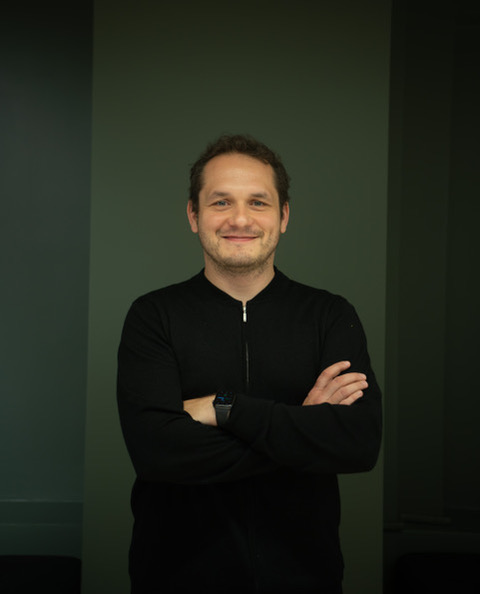

About Me
As a Researcher at SimulaMet and Professor at OsloMet, I am dedicated to advancing AI for social good, focusing on transparent and trustworthy AI systems. My journey in AI began with a fascination for its potential to transform healthcare and has evolved into a mission to ensure AI benefits society at large.
Throughout my career, I have been driven by the challenge of making complex AI systems more interpretable, ethical and user focused. This passion has led me to become a prominent voice in AI ethics and applications, contributing to both academic research and public understanding of AI's role in our future.
Research Interests
-
Transparent and Trustworthy AI Systems
Developing AI models that are interpretable and accountable, important for applications in critical areas such as healthcare and public sector.
-
AI in Healthcare and Medical Imaging
Applying machine learning to improve diagnostic accuracy and patient care.
-
Machine Learning for Social Good
Exploring how AI can address societal challenges, from child welfare to environmental sustainability.
-
AI Ethics and Accountability
Researching frameworks to ensure AI systems are developed and deployed responsibly, with a focus on fairness and transparency.
-
Public Sector AI Implementation
Advising on strategies for effective and ethical AI adoption in government and public sector.
Key Contributions
- Development of metrics, datasets and benchmarks for validating AI in healthcare image analysis, enhancing diagnostic accuracy in gastroenterology.
- Pioneered AI applications in reproductive medicine, that potentially can contribute to improved fertility treatment outcomes.
- Resaerched and developed AI-powered interview training systems for child welfare professionals, improving practices in sensitive cases.
For a comprehensive list of my publications, please visit my Google Scholar profile.
In the Media
-
Finansavisen, April 2024
Discussed the potential revolution of AI 2.0 in Norwegian industry
Read the article -
Forskersonen, March 2024
Explained how AI doesn't think or develop like humans
Read the article -
Digi.no, January 2024
Wrote about Norway's role as a standard-bearer for ethics in an unpredictable future
Read the article -
Morgenbladet, January 2023
Provided insights on how AI might shape the world over the next decade
Read the article -
Digi.no, December 2023
Discussed the implications of the EU's AI Act for Norway
Read the article -
Forskning.no, January 2022
Explained why robots might never think like humans
Read the article -
Aftenposten, Various Articles
Contributed to debates on data security, AI in public sector, and AI's impact on education
Data security article
AI in education article
AI in public sector article
Collaborate
I am always eager to collaborate on projects that push the boundaries of AI for social good. Whether you are working in healthcare, public sector, or ethical AI development, I would love to explore how we can work together to create positive change.
Areas of particular interest for collaboration include:
- Ethical AI implementation
- Developing transparent AI systems
- AI education and public engagement projects
Let's connect: